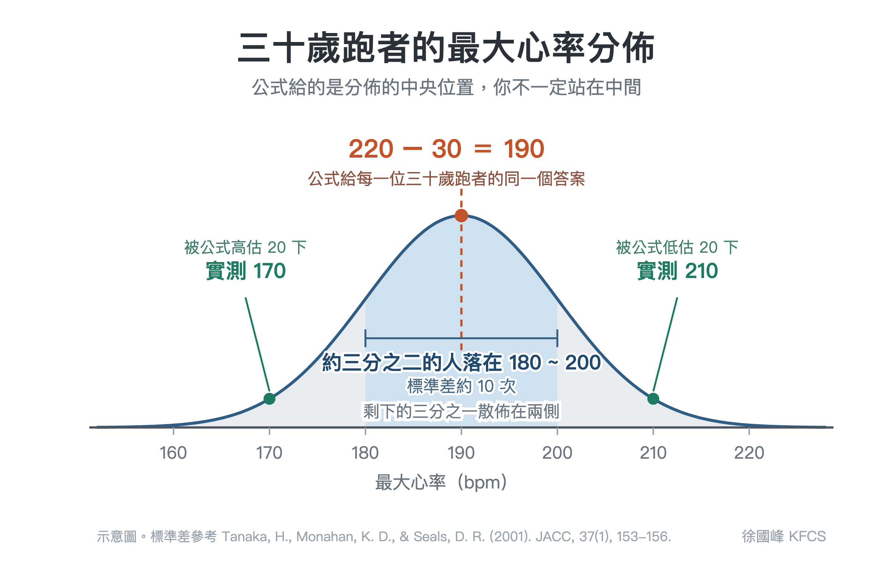

最大心率的公式是研究成果，不是拿來訓練用的
最常見的最大心率公式是 220 - 年齡。
這類公式，我建議我的學員都不要直接拿來作為訓練用，因為你可能是常態分佈邊緣的特例。
比如說你今年 30 歲，套上公式後，220 減 30，得到 190。很多人拿到這個數字，就把它填進跑錶的最大心率欄位，五個心率區間跟著自動算出來，從此每一次訓練的強度判讀，都建立在這個 190 上面。
但這個 190 描述的是一整群 30 歲的人所落在的中央位置，它有可能是你的最大心率，也可能不是，要靠運氣。
▎公式給的是分佈的中間，你不一定站在中間（見附圖）
年齡推估最大心率的公式，背後是一條常態分佈的曲線。文獻上估算出來的個體差異，標準差大約是 10 下左右（Tanaka et al., 2001）。
190 上下各 10，也就是 180~200 之間，在這個區間大約有三分之二的 30 歲跑者。剩下的三分之一散佈在這個範圍以外，其中有人的最大心率是 170，也有人是 210。
同樣是 30 歲，兩個人的最大心率可以差到 40 下，但公式對這兩位 30 歲跑者給出的答案是同一個 190。

▎我在檢測現場的發現跟上述的推理一致
二〇一五年起，我陸續為許多跑者做過最大心率實測，流程是在 400 公尺的操場或陡坡上跑上數趟間歇，一趟比一趟用力，直到再也跑不出比前一趟更高的心率為止。
測久了之後，讓我印象最深的一直是同齡跑者之間的落差有多大。同一個年齡層裡，我看過三十幾歲卻只能跑到 170 出頭的跑者，那是他全力衝完、喘到說不出話時的數字；也看過同年齡層的人在第二趟就超過 200，還能再跑，而且跑出 210 以上的最大心率。
他們不是測錯了，也不是體能好壞的差別。最大心率跟你的能力高低沒有必然關係，心臟的最高跳動頻率，跟身高很像，都是個人的生理特徵。不是愈高愈好，就只是個數字。
▎設錯了，你所有心率課表的強度都會跑到錯的位置
跑錶把最大心率換算成強度區間時，其中一種算法是儲備心率法：
目標心率 = (最大心率 - 安靜心率) × 強度百分比 + 安靜心率。
安靜心率你可以每天早上量，量到準為止；最大心率如果是用公式推估來的，誤差就從這一端進來。
假設有兩位跑者，安靜心率都是 50，跑錶上的最大心率也都照公式設成 190。
第一位的真實最大心率是 170，他的儲備心率其實只有 120，跑錶卻以為有 140。課表要他用 70% 的儲備心率跑輕鬆跑，跑錶算出來是 148 bpm。但 148 相對於他真正的儲備心率已經是 82%，落在強度 2 區的上緣，逼近乳酸閾值的門檻。他每一趟輕鬆跑都在硬撐，練得很累，恢復很慢，也一直不明白為什麼別人可以邊跑邊聊天。
第二位的真實最大心率是 210，儲備心率有 160，跑錶一樣以為只有 140。跑錶給他的還是 148 bpm，但相對於他的儲備心率只有 61%，落在強度 1 區的下緣，接近恢復跑的強度。他照著錶跑，永遠停在該有的強度以下，卻覺得自己每天都有乖乖完成課表。
同一個 148 bpm，對這兩位同樣是 30 歲的跑者來說，一位跑成接近閾值的強度，一位跑成恢復跑。這兩位跑者的問題完全相反，成因卻是同一個：他們的訓練建立在一個公式推出來的最大心率上。
▎那些公式是拿來做研究的，不是拿來訓練用的
年齡推估最大心率的公式不只一條，被引用最多的有三條。
❶ 220 - 年齡。出自一九七一年一份談身體活動與冠心病預防的文獻（Fox, Naughton, & Haskell, 1971）。那份文獻的主題並不是最大心率，這個公式是作者根據當時大約十一份已發表研究與未發表資料彙編所觀察到的趨勢歸納出來的（Robergs & Landwehr, 2002）。
❷ 208 - (0.7 × 年齡)。二〇〇一年提出（Tanaka, Monahan, & Seals, 2001），作者群統合了 351 篇研究、492 個組別、18,712 位受試者的平均值，再用 514 位健康受試者在實驗室裡實測交叉驗證。
❸ 211 - (0.64 × 年齡)。二〇一三年由挪威的 HUNT 研究提出（Nes et al., 2013），對 3,320 位 19~89 歲的健康成人做最大強度運動測驗，是少數以大規模實測資料為基礎的公式。
把 30 歲代進去，三條公式分別給出 190、187、192。三條之間差 5 下，同齡跑者之間卻可以差 40 下。換一條更新、樣本更大的公式，只是把中央位置左右挪動一些，你跟中央位置之間的距離，並沒有縮短。
這些公式本身沒有錯，它們在研究裡有它們的位置。
研究處理的是群體，個體的高估與低估會在大量樣本裡互相抵消。訓練面對的是獨立的個體，誤差不會被任何人抵消。
所以，無論那條公式是哪一年提出的、修正過幾版、採集了幾千位受試者的數據，對你個人來說都不能用。
簡言之：樣本再大，也只能把平均值算得更準，並無法把你在常態分佈上的位置算出來。
▎能拿來訓練的最大心率，是自己曾經跑出來的實際數值
如果你已經累積了一年以上的心率紀錄，裡面通常藏著幾筆全力比賽或高強度間歇的數據。RQ 的最大心率分析工具會列出近一年內最高的 10 筆「15 秒滾動平均心率」，直接一鍵套用。用 15 秒滾動平均，是為了濾掉那些 1~2 秒的訊號突波，留下身體確實撐住過的高心率。
這個數字是你自己跑出來的。你的真實最大心率可能比它更高，但要衝到那個數值本身就有風險，你目前的身心狀態可能並不允許可以跑到那個理論值；先用自己曾經跑出來的最高數值當作心率區間的上限，訓練上的風險反而比較低。等之後身心都更強大了，自然會允許你跑到你實際的最大心率，到那時再往上調高會更好。
設定完成後記得把跑錶的最大心率自動偵測關掉，否則在某次訊號不穩的訓練後，太智慧的跑錶可能會默默把你辛苦測到的數值改掉。
📚 參考資料
▹ Fox, S. M., Naughton, J. P., & Haskell, W. L. (1971). Physical activity and the prevention of coronary heart disease. Annals of Clinical Research, 3(6), 404-432.
▹ Nes, B. M., Janszky, I., Wisløff, U., Støylen, A., & Karlsen, T. (2013). Age-predicted maximal heart rate in healthy subjects: The HUNT Fitness Study. Scandinavian Journal of Medicine & Science in Sports, 23(6), 697-704.
▹ Robergs, R. A., & Landwehr, R. (2002). The surprising history of the "HRmax=220-age" equation. Journal of Exercise Physiology Online, 5(2), 1-10.
▹ Tanaka, H., Monahan, K. D., & Seals, D. R. (2001). Age-predicted maximal heart rate revisited. Journal of the American College of Cardiology, 37(1), 153-156.